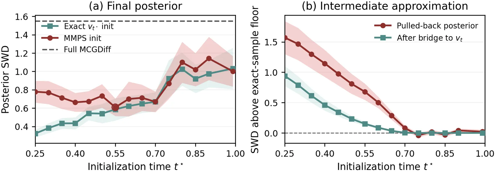
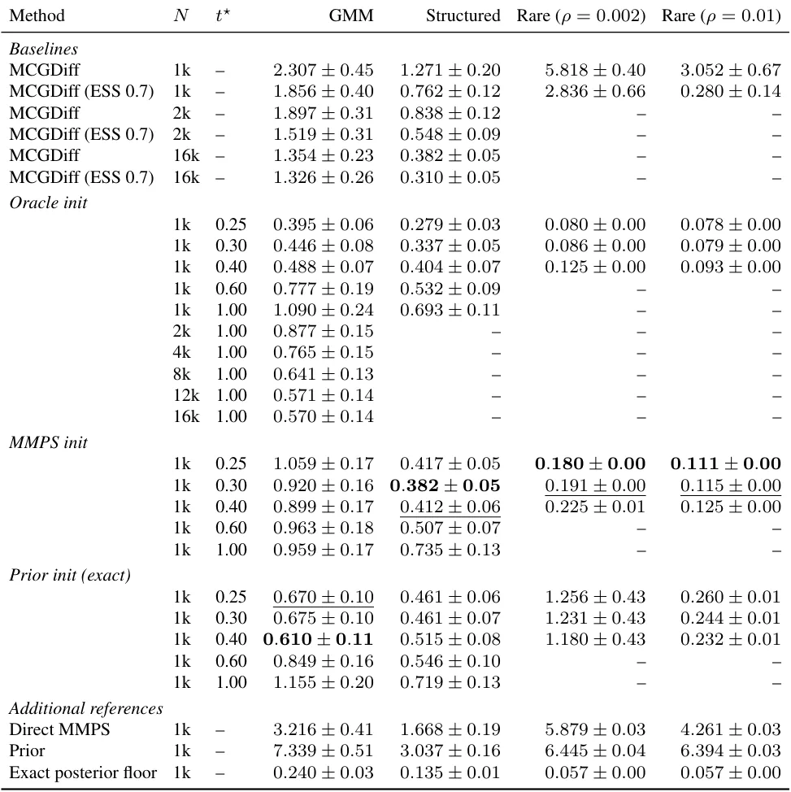
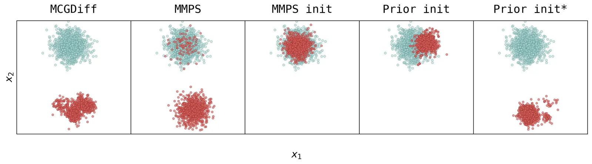
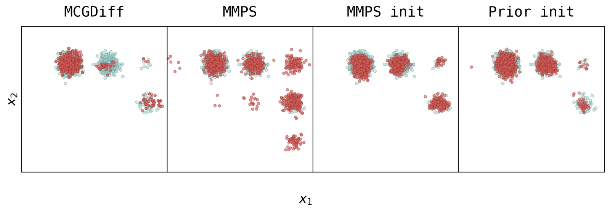

O problema: partículas demais, modos de menos
Modelos de difusão treinados sem supervisão servem como priors expressivos para problemas inversos bayesianos: dado um modelo generativo e uma observação ruidosa, queremos amostrar a distribuição posterior dos dados limpos. Métodos como MCGDiff constroem uma sequência de distribuições intermediárias que gradualmente incorporam a verossimilhança, usando Sequential Monte Carlo (SMC) para navegar do ruído puro até a posterior final.
O problema é que populações finitas de partículas sofrem de degeneração de pesos, colapso ancestral e perda de modos da posterior. Quando um modo relevante é raro sob o prior, uma população inicial sorteada do ruído puro pode simplesmente não conter nenhuma partícula naquela região — e o resampling, embora corrija diversidade, não cria partículas onde elas não existem.
Este paper observa que as distribuições intermediárias de MCGDiff — tilts gaussianos de marginais de difusão — podem ser puxadas de volta para posteriors no espaço limpo com condicionamento mais fraco. A variância efetiva de observação desse problema relaxado chega a ser o dobro da variância do ruído de difusão. Isso abre uma rota: amostrar a posterior suavizada, transportar essas amostras analiticamente através de uma ponte gaussiana para o alvo intermediário ruidoso, e executar apenas o sufixo restante do SMC.
A ideia: começar do meio, não do fim
A estratégia central é inicializar MCGDiff diretamente em um tempo intermediário t⋆, em vez de começar do terminal t=1 (ruído máximo). Para isso, os autores exploram a estrutura dos tilts gaussianos: a distribuição intermediária vₜ é proporcional à marginal de difusão pₜ(xₜ) multiplicada por uma gaussiana N(bₜ; Cₜxₜ, Rₜ), onde bₜ é uma pseudo-observação, Cₜ um operador linear e Rₜ uma covariância.
Essa distribuição tilted pode ser vista como a marginal em xₜ de uma joint Πₜ(x₀, xₜ) que fatora em prior × kernel de difusão × tilt gaussiano. A marginal em x₀ dessa joint é uma posterior no espaço limpo com condicionamento enfraquecido: a variância efetiva de observação cresce porque o ruído de difusão (1−ᾱₜ) se soma à covariância Rₜ do tilt. Os autores chamam essa marginal de pullback do tilt.
O passo seguinte é amostrar o pullback com um método aproximado — eles usam MMPS, que aproxima o score da verossimilhança intratável ajustando uma gaussiana aos dois primeiros momentos de p(x₀|xₜ) — e então transportar essas amostras para vₜ através da condicional Πₜ(xₜ|x₀), que é gaussiana e disponível em forma fechada. Esse transporte é exato: se x₀ ~ π̃ₜ e xₜ ~ Πₜ(·|x₀), então xₜ ~ vₜ por construção.
Como funciona no MCGDiff
MCGDiff constrói seus tilts intermediários na base de vetores singulares do operador forward A do problema inverso linear y = Ax₀ + σᵧε. Cada direção medida se torna ativa assim que o ruído de difusão excede um limiar τᵢ dependente da medição. Os autores restringem o tempo de inicialização a t⋆ > max τᵢ, garantindo que todas as direções medidas já estejam ativas e o alvo seja um único tilt gaussiano.
Uma consequência importante do pullback é que o problema inverso no espaço limpo pode ser substancialmente mais suave que o original. MCGDiff introduz ruído gaussiano aproximadamente no nível do ruído de difusão em seu tilt intermediário; no limite de medições quase sem ruído, com valores singulares unitários, a verossimilhança no espaço limpo resultante tem variância efetiva σ²ₑff,ₜ ≃ 2σ²ₜ, onde σ²ₜ = (1−ᾱₜ)/ᾱₜ.
Isso torna o problema auxiliar particularmente fracamente condicionado — exatamente o regime onde MMPS funciona melhor, porque sua aproximação gaussiana melhora conforme o ruído de observação cresce. MMPS não precisa de escala de guidance nem outro ajuste específico do problema. Após amostrar o pullback com MMPS, a ponte gaussiana exata transporta as amostras para vₜ⋆, e o sufixo inalterado de MCGDiff roda de t⋆ até 0.
A escolha de t⋆ estabelece um trade-off: valores maiores tornam o problema MMPS mais fácil, mas deixam uma trajetória SMC mais longa. O híbrido não herda a consistência assintótica de MCGDiff, porque o sufixo é inicializado com amostras aproximadas de peso uniforme, mas isso poderia ser restaurado substituindo MMPS por outro método assintoticamente consistente.

Três benchmarks, três lições
Os autores avaliam três problemas inversos de misturas gaussianas (GMM) onde tanto a posterior exata quanto os alvos intermediários vₜ de MCGDiff podem ser amostrados analiticamente. Isso isola a qualidade da inicialização intermediária do comportamento do sufixo SMC subsequente. A métrica é a distância Wasserstein fatiada (SWD) até amostras exatas da posterior.
O primeiro é o benchmark GMM padrão introduzido pelo próprio MCGDiff. Aqui, tanto a inicialização MMPS quanto a inicialização a partir do prior (um controle que descarta o condicionamento no espaço limpo, mas mantém a ponte) superam substancialmente o MCGDiff com resampling controlado por ESS. Com N=1000 partículas, MMPS init melhora SWD em cerca de 2× e prior init em cerca de 3×. Mesmo dando 16× mais partículas ao MCGDiff baseline, a inicialização intermediária ainda vence.
Isso revela algo importante: muito do ganho vem de corrigir a aproximação gaussiana da marginal terminal, que é imprecisa sob o schedule de difusão deste benchmark. Quando MCGDiff é inicializado com amostras exatas do terminal (t⋆=1), ele precisa de cerca de 2× as partículas para empatar com MMPS init e 8× para empatar com prior init. Como a inicialização a partir do prior descarta inteiramente o condicionamento de direções não observadas sobre [t⋆,1], isso mostra que o prefixo de MCGDiff retorna uma aproximação de partículas finitas pior que um único passo enviesado.
O segundo benchmark é uma GMM estruturada, onde os autores adicionam correlação entre modos. Aqui, a inicialização condicionada (MMPS) dá um ganho consistente sobre a inicialização a partir do prior, mostrando que o condicionamento importa quando a estrutura da posterior diverge do prior.

Modo raro: quando resampling não basta
O terceiro benchmark isola perda de suporte: uma GMM onde o modo relevante para a posterior tem probabilidade ρ baixa sob o prior. Quando ρ é pequeno, uma população finita sorteada do prior provavelmente não contém nenhuma partícula naquele modo — e resampling não cria partículas, apenas redistribui peso.
Aqui, MMPS init melhora SWD em mais de uma ordem de magnitude sobre MCGDiff com ESS-gating. A inicialização a partir do prior, que mantém a ponte mas descarta o condicionamento no espaço limpo, frequentemente falha completamente, perdendo o modo relevante. Isso mostra que o condicionamento da inicialização se torna decisivo quando o problema exige capturar suporte que o prior não favorece.
A Figura 3 ilustra visualmente: MCGDiff e prior init às vezes capturam apenas um modo, enquanto MMPS init captura ambos de forma consistente. O controle prior init⋆ na figura usa t⋆=0.4 e resampling apenas a cada 10 passos, mas ainda assim falha em alguns casos.

O que o benchmark padrão não mede
Uma descoberta lateral importante é que o benchmark GMM padrão de MCGDiff recompensa cobertura do prior mais que fidelidade ao condicionamento. Como os autores observam, inicializar do prior em vez de MMPS também vence MCGDiff dado 16× as partículas, e ainda empata com 8× quando MCGDiff começa de amostras terminais exatas.
Isso significa que o benchmark é amplamente insensível ao condicionamento: o tilt é fraco o suficiente para que uma população grande sorteada do prior, transportada pela ponte, já resolva o problema. Os autores adicionaram a GMM estruturada e o problema de modo raro precisamente para separar esses dois tipos de falha de partículas finitas: perda de diversidade (que cobertura do prior pode reparar) versus perda de suporte (que não pode).

Custo computacional e extensões
O custo de MMPS init é dominado pelos passos de denoising (100 a 1000 nos experimentos), cada um exigindo uma avaliação de rede neural. A ponte gaussiana e o sufixo SMC adicionam custo marginal. Os autores reportam que 100 passos MMPS já dão ganhos substanciais, e 1000 passos saturam a melhoria na maioria dos casos.
A avaliação está confinada a GMMs com observações unidimensionais. Problemas inversos de imagem e científicos são os próximos passos naturais. A construção exige apenas que o tilt intermediário seja gaussiano e linear em xₜ; o modelo de medição original não entra no pullback. Estender para problemas não lineares com alvos intermediários construídos a partir de uma linearização da medição é uma direção promissora, citando trabalhos recentes de Zheng e colaboradores.
O híbrido não herda a consistência assintótica de MCGDiff porque o sufixo é inicializado com amostras aproximadas de peso uniforme. Isso poderia ser restaurado substituindo MMPS por outro método assintoticamente consistente, mas os autores argumentam que o ganho em desempenho de partículas finitas justifica a troca.
O que fica
Este paper mostra que a estrutura de tilts gaussianos em samplers de difusão pode ser explorada para pular a fase ruidosa inteira: o pullback para o espaço limpo é mais fácil de amostrar, e a ponte gaussiana transporta essas amostras de volta sem aproximação. A estratégia melhora SWD em 2× em problemas estruturados e em mais de 10× quando modos raros estão em jogo, tudo com o mesmo número de partículas.
A lição mais profunda é sobre o que benchmarks medem. O GMM padrão de MCGDiff recompensa cobertura do prior, não fidelidade ao condicionamento — tanto que inicializar do prior vence MCGDiff com população suficiente. Problemas de modo raro, ao contrário, isolam a capacidade de capturar suporte que o prior não favorece, e ali o condicionamento se torna insubstituível.
A abordagem é geral: qualquer sampler que construa tilts gaussianos intermediários pode se beneficiar. A escolha de t⋆ e do sampler do pullback são os únicos graus de liberdade, e o trade-off entre facilidade do problema auxiliar e comprimento do sufixo é suave. O próximo teste será em problemas inversos reais, onde posteriors analíticas não existem e a geometria é mais difícil.
O que fica
- Tilts gaussianos em difusão podem ser puxados para posteriors mais suaves no espaço limpo, amostradas aproximadamente e transportadas de volta por ponte exata, pulando a fase ruidosa do SMC.
- A estratégia melhora distância Wasserstein em 2× em GMMs estruturadas e em mais de 10× quando o modo relevante é raro sob o prior, com o mesmo número de partículas.
- O benchmark padrão de MCGDiff recompensa cobertura do prior, não condicionamento: inicializar do prior vence com partículas suficientes, mas falha quando o modo posterior é raro.
- A avaliação usa apenas GMMs 1D com posteriors analíticas; problemas de imagem, não linearidades e operadores complexos ainda não foram testados.
Paper original: Direct Intermediate Initialization for Tilted Diffusion Samplers
Comentários
Nenhum comentário ainda. Seja o primeiro.